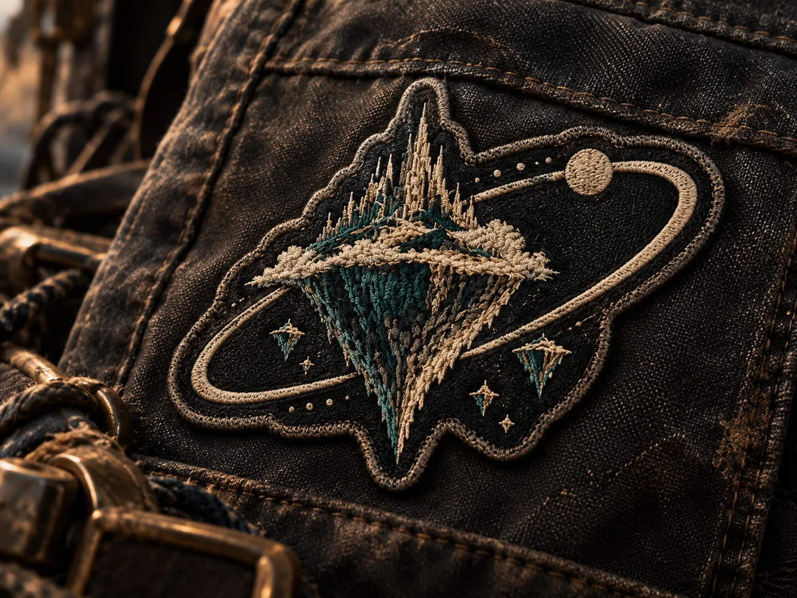
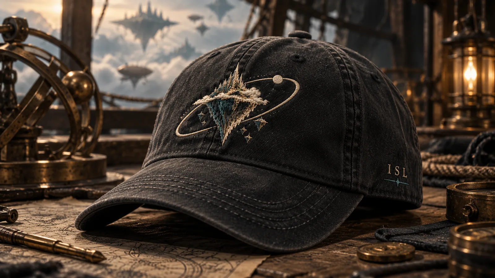
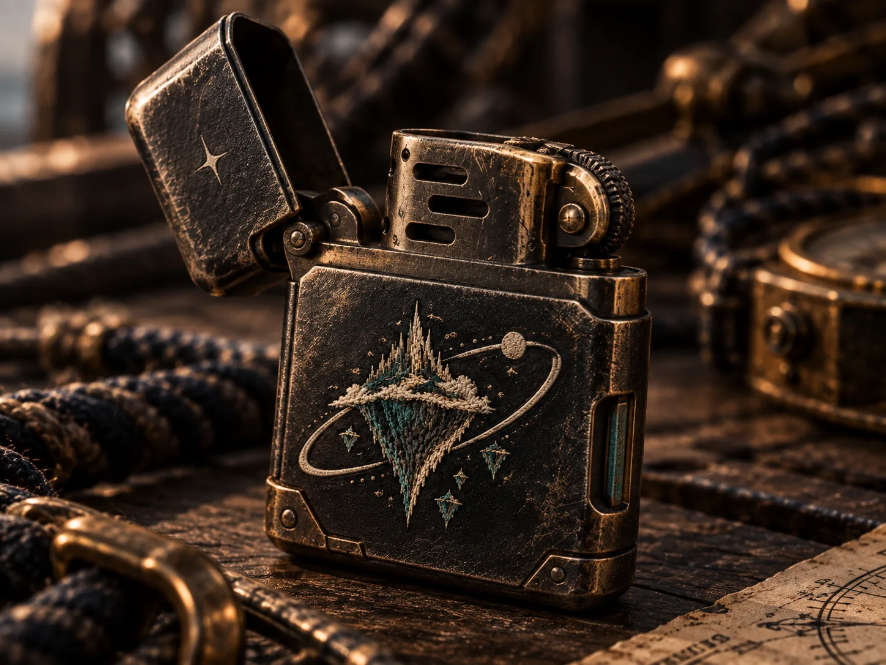
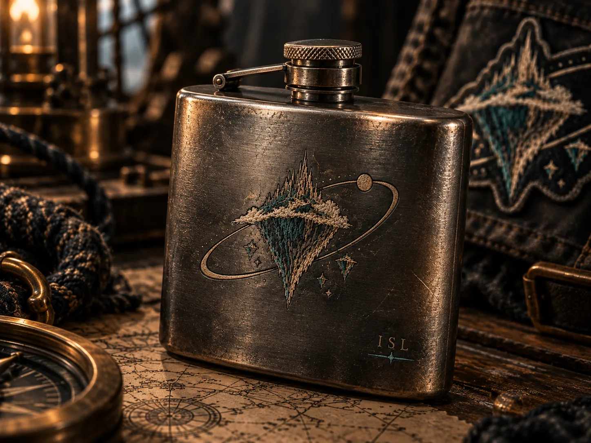
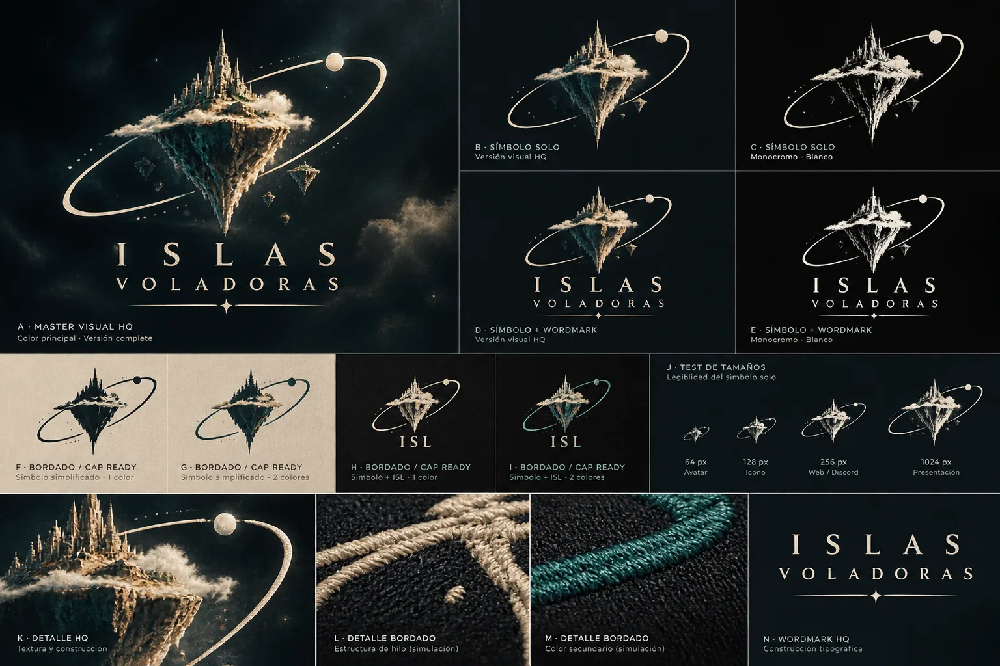

CREW PATCH 01
Pertenecer sin uniforme.
La prueba más dura: que ISL sobreviva sin paisaje, tráiler ni explicación.
EMBROIDERY SENSOR
No diseñamos souvenirs para ponerles un logo. Probamos piezas de tripulación que podrían existir primero dentro de ISLAS VOLADORAS y después acabar en tu bolsillo, mochila o cubierta.

La prueba más dura: que ISL sobreviva sin paisaje, tráiler ni explicación.
EMBROIDERY SENSOR
Metal de bolsillo, desgaste causal y rareza funcional. Punkarra por biografía, no por decoración pegada.
POCKET OBJECT SENSOR
Objeto personal de tripulación. Su fuerza narrativa está en la historia del objeto, no en glorificar el consumo.
CREW RELIC SENSOR
El símbolo no se vuelve canon por quedar bien sobre un objeto.
El board HQ prueba fabricación, reducción y bordado. Si la familia sobrevive al reencuentro humano, extraemos la gramática que funciona; no promocionamos automáticamente el asset.
Elige una lectura provisional. Se guarda sólo en este navegador y no cambia CANON ni autoridad.